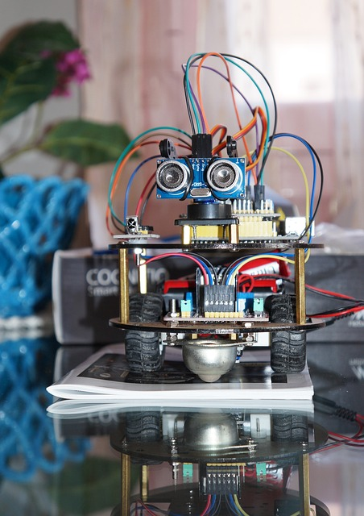

Robotics
Robotics is a multidisciplinary field that combines mechanical engineering, electrical engineering, computer science, and artificial intelligence to design and build robots. The core concepts of robotics revolve around key components such as actuators, sensors, and control systems. Actuators are responsible for a robot’s movement, converting energy into motion, while sensors allow the robot to perceive its environment by detecting factors like light, distance, and temperature.